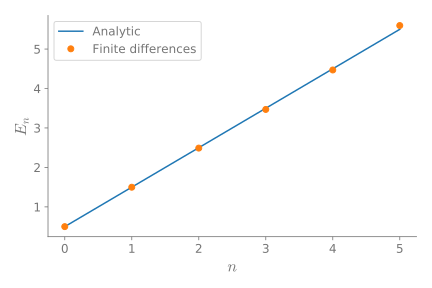
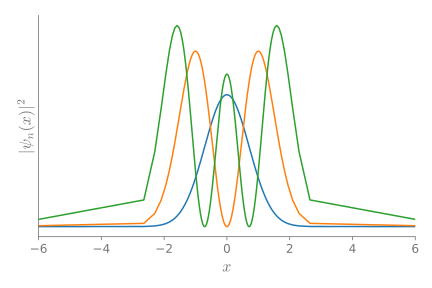

Diferencias finitas en dominios infinitos
Diferencias finitas en dominios infinitos
Gracias a mi amigo, Edward Villegas, terminé pensando acerca del uso de cambio de variables en la solución de problemas de valores propios con diferencias finitas.
El problema
Digamos que queremos resolver una ecuación diferencias sobre un dominio infinito. Un caso común es la solución de la ecuación de Schrödinger independiente del tiempo sujeta a un potencial \(V(x)\). Por ejemplo
en donde queremos encontrar las parejas de valores/funciones propias \((E_n, \psi_n(x))\).
Lo que normalmente hago cuando uso diferencias finitas es dividir el dominio regularmente. Donde tomo un dominio lo suficientemente grande, para que la solución haya decaído a cero. Lo que hago en esta publicación es usar un cambio de variable para convertir el intervalo a uno finito y luego dividir el dominio transformado regularmente en intervalos finitos.
Mi enfoque usual
Mi enfoque usual es aproximar la segunda derivada con una diferencia centrada para el punto \(x_i\), de la siguiente manera
con \(\Delta x\) la separación entre puntos consecutivos.
Podemos solucionar este problem en Python con el siguiente bloque de código:
import numpy as np from scipy.sparse import diags from scipy.sparse.linalg import eigs def regular_FD(pot, npts=101, x_max=10, nvals=6): """ Find eigenvalues/eigenfunctions for Schrodinger equation for the given potential `pot` using finite differences """ x = np.linspace(-x_max, x_max, npts) dx = x[1] - x[0] D2 = diags([1, -2, 1], [-1, 0, 1], shape=(npts, npts))/dx**2 V = diags(pot(x)) H = -0.5*D2 + V vals, vecs = eigs(H, k=nvals, which="SM") return x, np.real(vals), vecs
Configuremos los gráficos con el siguiente bloque de código.
# Jupyter notebook plotting setup & imports %matplotlib notebook import matplotlib.pyplot as plt gray = '#757575' plt.rcParams["figure.figsize"] = 6, 4 plt.rcParams["mathtext.fontset"] = "cm" plt.rcParams["text.color"] = gray fontsize = plt.rcParams["font.size"] = 12 plt.rcParams["xtick.color"] = gray plt.rcParams["ytick.color"] = gray plt.rcParams["axes.labelcolor"] = gray plt.rcParams["axes.edgecolor"] = gray plt.rcParams["axes.spines.right"] = False plt.rcParams["axes.spines.top"] = False
Consideremos el oscilador armónico cuántico, que tiene como valores propios
Usando el método de diferencias finitas obtenemos valores que están muy cerca de los analíticos.
x, vals, vecs = regular_FD(lambda x: 0.5*x**2, npts=201) vals
Con respuesta
array([0.4996873 , 1.49843574, 2.49593063, 3.49216962, 4.48715031, 5.4808703 ])
Los valores analíticos son los siguientes
[0.5, 1.5, 2.5, 3.5, 4.5, 5.5])
Si graficamos estos dos conjuntos, obtenemos lo siguiente.
plt.figure() plt.plot(anal_vals) plt.plot(vals, "o") plt.xlabel(r"$n$", fontsize=16) plt.ylabel(r"$E_n$", fontsize=16) plt.legend(["Analytic", "Finite differences"]) plt.tight_layout();

Veamos las funciones propias
plt.figure() plt.plot(x, np.abs(vecs[:, :3])**2) plt.xlim(-6, 6) plt.xlabel(r"$x$", fontsize=16) plt.ylabel(r"$|\psi_n(x)|^2$", fontsize=16) plt.yticks([]) plt.tight_layout();

Un inconveniente con este método es el muestreo redundante hacia los extremos del intervalo mientras submuestreamos el centro.
Transformando el dominio
Ahora, consideremos el caso en el que transormamos el dominio infinito a uno finito usando un cambio de variable
con \(\xi \in (-1, 1)\). Dos opciones para esta transformación son:
\(\xi = \tanh x\); y
\(\xi = \frac{2}{\pi} \arctan x\).
Haciendo este cambio de variable la ecuación, debemos resolver la siguiente ecuación
El siguiente bloque de código resuelve el problema de valores propios en el dominio transformado:
def mapped_FD(pot, fun, dxdxi, dxdxi2, npts=101, nvals=6, xi_tol=1e-6): """ Find eigenvalues/eigenfunctions for Schrodinger equation for the given potential `pot` using finite differences over a mapped domain on (-1, 1) """ xi = np.linspace(-1 + xi_tol, 1 - xi_tol, npts) x = fun(xi) dxi = xi[1] - xi[0] D2 = diags([1, -2, 1], [-1, 0, 1], shape=(npts, npts))/dxi**2 D1 = 0.5*diags([-1, 1], [-1, 1], shape=(npts, npts))/dxi V = diags(pot(x)) fac1 = diags(dxdxi(xi)**2) fac2 = diags(dxdxi2(xi)) H = -0.5*fac1.dot(D2) - 0.5*fac2.dot(D1) + V vals, vecs = eigs(H, k=nvals, which="SM") return x, np.real(vals), vecs
Primera transformación: \(\xi = \tanh(x)\)
Consideremos la primera transformación
En este caso,
y
Necesitamos definir las funciones
pot = lambda x: 0.5*x**2 fun = lambda xi: np.arctanh(xi) dxdxi = lambda xi: 1 - xi**2 dxdxi2 = lambda xi: -2*xi*(1 - xi**2)
y correr
x, vals, vecs = mapped_FD(pot, fun, dxdxi, dxdxi2, npts=201) vals
Y obtenemos los siguientes valores propios
array([0.49989989, 1.4984226 , 2.49003572, 3.46934257, 4.46935021, 5.59552989])
Si los comparamos con los valores analítivos obtenemos lo siguiente.
plt.figure() plt.plot(anal_vals) plt.plot(vals, "o") plt.legend(["Analytic", "Finite differences"]) plt.xlabel(r"$n$", fontsize=16) plt.ylabel(r"$E_n$", fontsize=16) plt.tight_layout();
Y las siguientes funciones propias.
plt.figure() plt.plot(x, np.abs(vecs[:, :3])**2) plt.xlim(-6, 6) plt.xlabel(r"$x$", fontsize=16) plt.ylabel(r"$|\psi_n(x)|^2$", fontsize=16) plt.yticks([]) plt.tight_layout();
Segunda transformación: \(\xi = \frac{2}{\pi}\mathrm{atan}(x)\)
Consideremos ahora la segunda transformación
En este caso,
y
Una vez más, definimos las funciones
pot = lambda x: 0.5*x**2 fun = lambda xi: np.tan(0.5*np.pi*xi) dxdxi = lambda xi: 2/np.pi * np.cos(0.5*np.pi*xi)**2 dxdxi2 = lambda xi: -4/np.pi * np.cos(0.5*np.pi*xi)**4 * np.tan(0.5*np.pi*xi)
y ejecutamos
x, vals, vecs = mapped_FD(pot, fun, dxdxi, dxdxi2, npts=201) vals
para obtener los siguientes valores propios
array([0.49997815, 1.49979632, 2.49930872, 3.49824697, 4.49627555, 5.49295665])
con la siguiente gráfica
plt.figure() plt.plot(anal_vals) plt.plot(vals, "o") plt.legend(["Analytic", "Finite differences"]) plt.xlabel(r"$n$", fontsize=16) plt.ylabel(r"$E_n$", fontsize=16) plt.tight_layout();

y las siguientes funciones propias.
plt.figure() plt.plot(x, np.abs(vecs[:, :3])**2) plt.xlabel(r"$x$", fontsize=16) plt.ylabel(r"$|\psi|^2$", fontsize=16) plt.xlim(-6, 6) plt.xlabel(r"$x$", fontsize=16) plt.ylabel(r"$|\psi_n(x)|^2$", fontsize=16) plt.yticks([]) plt.tight_layout();

Conclusión
El método funciona bien, aunque la ecuación diferencial es más complicada por el cambio de variable. Aunque existen métodos más elegantes para considerar dominiso infinitos, este es lo suficientemente simple para hacerse en 10 líneas de código.
Podemos ver que la transforamción \(\xi = \mathrm{atan}(x)\), cubre mejor el dominio que \(\xi = \tanh(x)\), donde la mayoría de los puntos están ubicados en el centro del intervalo.
¡Gracias por leer!
Esta publicación se escribió en el Jupyter notebook. Puedes descargar este notebook, o ver una versión estática en nbviewer.


{kind=link}